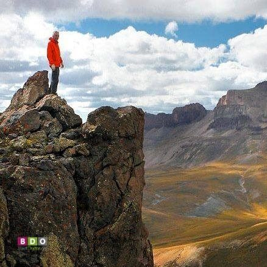
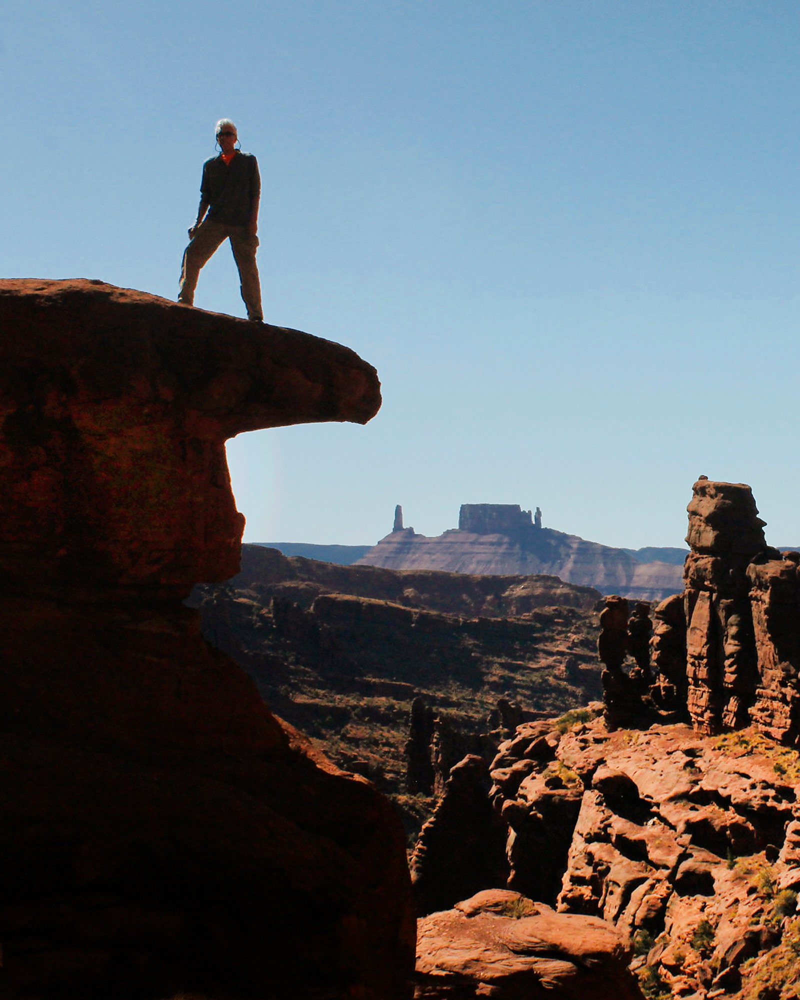

|
Welcome to a site about Gary Jones. Gary is originally from southern California but has resided in Colorado for over 30 years. He has been retired since his early 50s and decided to take up rock climbing and hiking. He is an avid hiker and has been for decades. Gary is currently in his 70s and still hikes and summits mountains as recently as this year (2025). |
Gary has summited over 20 different 14ers (peaks of 14,000 feet or higher) - some of them multiple times - within the state of Colorado as well as dozens of 13,000+ peaks. Gary has also been on several hikes across the globe including Utah, New Zealand, and Peru. |
|

Among Gary's many accomplishments he has hiked Long's Peak (multiple times), Quandary Peak (both from the East and West approach), and Mt. Elbert. As well as many multiple peak summit hikes such as Mt. Democrat, Mt. Cameron, and Mt. Lincoln all in one day! There was also his hiking feat of Gray's Peak and Torreys Peak in one day. |

Some of Gary's other accomplishments are all of the lower elevation hikes (still above 9,000 feet) which include Twin Sisters, Storm Mountain, Sheep Mountain, and many others. Gary enjoys both day hikes as well as multi-day backpacking trips. He has done several backpacking trips in the Maroon Bells area as well as in Rocky Mountain National Park. Gary enjoys exploring new trails as well as revisiting favorite old trails. |
-
Welcome to a site about Gary Jones. Gary is originally from southern California but has resided in Colorado for over 30 years. He has been retired since his early 50s and decided to take up rock climbing and hiking. He is an avid hiker and has been for decades. Gary is currently in his 70s and still hikes and summits mountains as recently as this year (2025).
-
Gary has summited over 20 different 14ers (peaks of 14,000 feet or higher) - some of them multiple times - within the state of Colorado as well as dozens of 13,000+ peaks. Gary has also been on several hikes across the globe including Utah, New Zealand, and Peru.
-
Among Gary's many accomplishments he has hiked Long's Peak (multiple times), Quandary Peak (both from the East and West approach), and Mt. Elbert. As well as many multiple peak summit hikes such as Mt. Democrat, Mt. Cameron, and Mt. Lincoln all in one day! There was also his hiking feat of Gray's Peak and Torreys Peak in one day.
-
Some of Gary's other accomplishments are all of the lower elevation hikes (still above 9,000 feet) which include Twin Sisters, Storm Mountain, Sheep Mountain, and many others. Gary enjoys both day hikes as well as multi-day backpacking trips. He has done several backpacking trips in the Maroon Bells area as well as in Rocky Mountain National Park. Gary enjoys exploring new trails as well as revisiting favorite old trails.